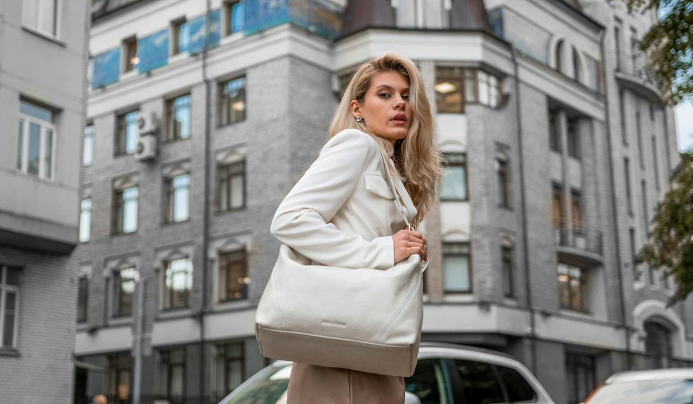

En bref
Le meilleur sac cabas pour femme en 2026 est Le Cabas de Vanessa Bruno, noté 8,7/10 (relevé de démonstration). Il gagne sur la gamme, cinq tailles du XS au XL en toile, lin, raphia et cuir, et sur la fabrication française de sa toile. Longchamp et son Pliage suivent à 8,3/10 avec le prix le plus bas du panel, 125 € en M, et Polène complète le podium à 8,1/10 grâce au cuir de son Cyme.
- Le Cabas M zippé en toile et sequins coûte 180 €, le Pliage Original M de Longchamp 125 €, le Cyme de Polène 440 €
- Le Cabas de Vanessa Bruno se décline en 5 tailles et 4 matières, la gamme la plus large parmi celles que nous avons relevées
- Le prix de la taille M va de 125 € à 650 € sur les 10 marques classées
- Longchamp remporte le critère Prix, Polène le critère Matières, Vanessa Bruno la polyvalence et l'origine
Sommaire de ce comparatif
Nos critères et leur poids
Un cabas se juge un mardi pluvieux, pas sur une photo. Il doit avaler un ordinateur le lundi, des poireaux le samedi, et rester présentable dans les deux cas. Nous avons donc noté chaque marque sur cinq critères, pondérés selon ce qui fait garder ou revendre un sac au bout d'un an.
| Critère | Poids | Ce que nous regardons |
|---|---|---|
| Polyvalence et tailles | 25 % | Le nombre de tailles et de versions (zippée, ouverte, bandoulière), les usages couverts dans une semaine |
| Matières et finitions | 25 % | La qualité de la toile ou du cuir, les coutures, les anses, la tenue après plusieurs mois |
| Prix | 20 % | Le prix catalogue de la taille M ou de son équivalent, et l'écart entre la plus petite et la plus grande taille |
| Confort et praticité | 15 % | Le poids à vide, la fermeture, la hauteur des anses, le portage main et épaule |
| Origine et savoir-faire | 15 % | Le lieu de fabrication affiché, la traçabilité de la matière, les certifications |
Total 100 %. Les sous-notes sont arrondies au dixième, la note globale est la moyenne pondérée.
La polyvalence et la matière pèsent la moitié de la note. C'est un choix assumé. Un cabas bon marché mais disponible dans une seule taille finit souvent au placard, un cabas superbe mais qui n'accepte pas un ordinateur ne sort que le week-end.
Le classement des 10 meilleurs cabas
L'écart entre la première et la deuxième place tient en quatre dixièmes. Il se joue sur la gamme et sur l'origine, pas sur le prix, où Longchamp garde l'avantage.
01 La gamme la plus complète5 tailles, 4 matières, dès 130 €8,7/10
La gamme la plus complète5 tailles, 4 matières, dès 130 €8,7/10
La gamme la plus complète5 tailles, 4 matières, dès 130 €8,7/1002Le meilleur prixLe Pliage Original M à 125 €8,3/10
03 Le plus beau cuirCyme en cuir grainé à 440 €8,1/10
Le plus beau cuirCyme en cuir grainé à 440 €8,1/10
Le plus beau cuirCyme en cuir grainé à 440 €8,1/10Le Cabas de Vanessa Bruno prend la tête parce qu'il est le seul du panel à couvrir toute la semaine dans une même famille de sac. Le XS sort le soir, le M part au bureau, le XL va à la plage, et chaque taille existe en toile, en lin, en raphia ou en cuir. Longchamp signe le meilleur rapport poids et prix, avec un Pliage qui se plie dans une poche et ne pèse presque rien. Polène, enfin, propose le cuir le plus abouti, mais son Cyme démarre à 390 € en Mini.
| Marque | Polyvalence (25 %) | Matières (25 %) | Prix (20 %) | Confort (15 %) | Origine (15 %) | Note |
|---|---|---|---|---|---|---|
| Vanessa Bruno | 9,4 | 8,8 | 7,6 | 8,4 | 9,0 | 8,7 |
| Longchamp | 8,6 | 7,6 | 9,4 | 9,0 | 7,0 | 8,3 |
| Polène | 7,8 | 9,2 | 7,0 | 7,8 | 8,4 | 8,1 |
| Sézane | 7,8 | 8,0 | 8,0 | 7,8 | 7,6 | 7,9 |
| A.P.C. | 7,2 | 7,8 | 7,6 | 8,0 | 7,4 | 7,6 |
Sous-notes des cinq premières marques. Vanessa Bruno perd le critère Prix face à Longchamp et le critère Matières face à Polène.
Le tableau comparatif des 10 cabas
Chaque ligne donne le cabas phare de la marque dans sa taille M, ou dans la taille la plus proche quand la marque ne vend qu'un format. Le prix est celui du catalogue, hors remise.
| Marque et cabas phare | Note /10 | Prix (taille M ou équivalent) | Matières proposées | Tailles relevées | Le point fort |
|---|---|---|---|---|---|
| Vanessa Bruno, Le Cabas M zippé en toile et sequinsNotre choix | 8,7 | 180 € | Toile, lin, raphia, cuir | 5 (XS à XL) | La gamme la plus complète |
| Longchamp, Le Pliage Original cabas M | 8,3 | 125 € | Polyamide recyclée, cuir | M et L relevés | Le prix et la légèreté |
| Polène, Cyme | 8,1 | 440 € | Cuir grainé | 4 (Nano à Tote) | Le cuir |
| Sézane, cabas en cuir | 7,9 | Autour de 245 € | Cuir | Non affichée | Le style parisien |
| A.P.C., Tote Ninon | 7,6 | 260 € | Matériaux recyclés, doublure coton | 2 (Small et standard) | La sobriété |
| Le Tanneur, Hortense | 7,3 | 650 € | Cuir grainé double face | 2 (moyen et grand) | Le cuir travaillé en France |
| Gérard Darel, 24H | 7,2 | 365 € | Cuir, toile enduite, cuir tressé | 1 format | Le grand sac de bureau |
| Lancaster, Ida Double | 7,0 | 289 € | Cuir de vachette grainé | 2 (grand et très grand) | Le cuir le moins cher |
| Maje, Milpli Cabas | 6,9 | 395 € | Cuir craquelé, suède, toile et cuir | 1 format | Le choix de finitions |
| Sandro, Le Grand Bazaar | 6,8 | 425 € | Suède | 1 format | La souplesse du suède |
Prix catalogue en euros TTC relevés sur les sites officiels, hors ventes Archives. Le prix de Sézane est indicatif, la collection change à chaque saison. Notes et prix, relevé de démonstration du 16 octobre 2026.
Trois lectures. Le prix d'une taille M varie d'un facteur supérieur à cinq, de 125 € chez Longchamp à 650 € pour l'Hortense de Le Tanneur. Le cuir domine le haut du tableau en valeur, mais la toile domine en usage. Et dans nos relevés, seules deux marques, Vanessa Bruno et Polène, affichent au moins quatre formats d'un même modèle, ce qui change tout quand on cherche le cabas de bureau et le cabas de week-end dans la même ligne.
D'où vient le cabas que tout le monde porte
En 1998, la maison Vanessa Bruno dessine un grand sac à provisions, pensé pour le marché, en toile de coton rehaussée de sequins cousus. Vingt-huit ans plus tard, ce sac est devenu l'icône de la marque et une forme que toute la place parisienne a reprise à sa manière. Le Pliage de Longchamp, né d'une autre logique, celle du sac de voyage qui se plie, occupe le même terrain du sac à tout faire.
Ce qui distingue le modèle d'origine tient en trois détails. Les sequins, cousus et non collés. La toile, 100 % coton, fabriquée en France, avec une étiquette intérieure qui le dit. Et les anses, 22 cm de hauteur sur le M zippé, assez pour le porter à l'épaule sur un manteau d'hiver.
Un bon cabas, c'est celui qu'on oublie qu'on porte. On y jette ses clés le matin et on le retrouve le soir avec trois choses en plus dedans.
Cinq tailles, du XS au XL
La gamme part du XS zippé à 130 €, qui tient un téléphone, un portefeuille et un rouge à lèvres. Le S zippé à 140 € reçoit une bandoulière amovible. Le M, à 160 € en version ouverte et 180 € en version zippée, mesure 29 cm de haut pour 42 à 45 cm de large et 15 cm de profondeur. Le L zippé en toile coûte 195 €, et le XL se trouve en lin et en raphia.
Quatre matières pour quatre saisons
La toile à sequins sert toute l'année. Le lin, de 160 € en XS à 260 € en XL, se personnalise en ligne avec des lettres ou des motifs, ce qui en fait un cadeau facile. Le raphia, fabriqué à Madagascar, va de 185 € à 270 € et prend le relais l'été. Le cuir de vachette, fabriqué en Italie, monte de 295 € en S à 395 € en L. Polène et Le Tanneur restent plus pointus sur le cuir seul, mais rares sont les cabas qui couvrent les quatre saisons avec une seule silhouette.
Prix, poids, rangement, ce qui sépare les cinq premiers
Le prix est le critère où le classement s'inverse. Longchamp vend son Pliage Original à 125 € en M et 135 € en L, soit 55 € de moins que le Cabas M zippé en toile. Sur ce critère, Longchamp gagne nettement, et nous l'écrivons sans détour. Le Pliage est aussi plus léger, en polyamide recyclée avec garniture en cuir de Russie, et il se replie à plat dans une valise.
Le cuir change l'équation. Polène affiche 440 € pour le Cyme et 460 € pour le Cyme Tote, qui reçoit un ordinateur. Lancaster reste le cuir le plus accessible du panel, avec l'Ida Double à 289 €. Le Tanneur assemble en France l'Hortense à partir d'un cuir grainé italien, à 650 € en moyen modèle. Ce sont des sacs pour dix ans, à condition d'accepter le prix d'entrée.

Reste le rangement. La toile à sequins de Vanessa Bruno n'a pas de compartiment ordinateur dédié et demande un rangement à plat pour garder ses sequins intacts. Le Cyme Tote de Polène et le 24H de Gérard Darel, avec ses poches, sont mieux organisés pour le bureau. A.P.C. joue la discrétion, avec un Tote Ninon en matériaux recyclés à 260 € et une version Small à 190 €.
Quel cabas choisir selon votre profil
Si vous voulez un seul cabas pour toute la semaine
Prenez Le Cabas M zippé en toile et sequins de Vanessa Bruno, à 180 €. La fermeture protège le contenu dans le métro, les anses de 22 cm passent sur un manteau, et la toile supporte le marché comme la réunion du matin.
Si votre budget plafonne à 150 €
Prenez le Pliage Original de Longchamp, 125 € en M. C'est le meilleur prix du classement, le plus léger, et le seul qui se plie dans un sac de voyage.
Si vous voulez un cabas en cuir pour dix ans
Regardez le Cyme de Polène à 440 € pour le grain du cuir, ou l'Hortense de Le Tanneur pour la fabrication française. Notre comparatif des cabas en cuir détaille les neuf meilleurs modèles.
Si vous cherchez un cadeau personnalisé
Le cabas en lin de Vanessa Bruno se personnalise en ligne avec des initiales ou des motifs, de 160 € en XS à 260 € en XL. Longchamp propose de son côté son service My Pliage, sur le seul Pliage.
Notre verdict
Le meilleur sac cabas pour femme en 2026 est Le Cabas de Vanessa Bruno, avec 8,7/10. Il gagne sur la polyvalence, avec cinq tailles et quatre matières, et sur l'origine, avec une toile fabriquée en France. Il perd le prix face au Pliage de Longchamp, 8,3/10, et la matière face au Cyme de Polène, 8,1/10.
Si votre priorité est le prix ou la légèreté, prenez le Pliage Original de Longchamp. Si votre priorité est le cuir, prenez le Cyme de Polène. Si vous voulez un seul sac qui suit vos semaines et vos saisons, prenez Le Cabas M zippé.
Questions fréquentes
Quel est le meilleur sac cabas pour femme en 2026 ?
Le Cabas de Vanessa Bruno arrive premier de notre classement 2026 avec 8,7/10, devant Longchamp (8,3/10) et Polène (8,1/10). Il se distingue par ses cinq tailles du XS au XL et ses quatre matières, toile, lin, raphia et cuir. Le Cabas M zippé en toile et sequins coûte 180 €.
Quel cabas est le moins cher parmi les grandes marques ?
Le Pliage Original de Longchamp est le moins cher de notre classement, à 125 € en taille M et 135 € en taille L. Le Cabas de Vanessa Bruno démarre à 130 € en XS et coûte 180 € en M zippé. En cuir, l'Ida Double de Lancaster est le plus accessible à 289 €.
Est-ce qu'un cabas en toile tient plusieurs années ?
Oui, si la toile est dense et les anses bien cousues. La toile 100 % coton du Cabas de Vanessa Bruno est fabriquée en France et une partie des toiles est certifiée Oeko-Tex. Pour garder les sequins intacts, rangez-le à plat plutôt que suspendu.
Quelle taille de cabas prendre pour aller au bureau ?
Une taille M suffit pour un ordinateur 13 pouces et un carnet A4. Le Cabas M zippé de Vanessa Bruno mesure 29 cm de haut pour 42 à 45 cm de large et 15 cm de profondeur. Pour un ordinateur 14 pouces, le Cyme Tote de Polène ou une taille L est plus sûr.
Peut-on personnaliser un sac cabas ?
Le cabas en lin de Vanessa Bruno se personnalise en ligne avec des lettres ou des motifs, de 160 € en XS à 260 € en XL. Longchamp personnalise de son côté le Pliage avec son service My Pliage.
Comment sont notées les marques ?
Chaque marque est notée sur cinq critères pondérés, la polyvalence et les tailles (25 %), les matières et finitions (25 %), le prix (20 %), le confort (15 %) et l'origine (15 %). Les prix viennent des sites officiels et les notes sont la moyenne pondérée des sous-notes. Notes et prix, relevé de démonstration du 16 octobre 2026.
Notre méthode
Ce classement repose sur des relevés faits sur les sites officiels et en boutique, refaits chaque mois.
- Les prix sont relevés sur les sites officiels des marques en France, hors soldes et hors code promo, à la date indiquée
- Les matières, l'origine de fabrication et les dimensions sont celles affichées sur les fiches produit
- Chaque sac est porté et rempli en conditions réelles, ordinateur, trousse, gourde et parapluie compris
- Les avis clients vérifiés sont lus un par un sur la tenue des anses, des coins et des finitions
- Les services (livraison, retours, réparation, seconde main) sont testés sur une commande réelle par marque